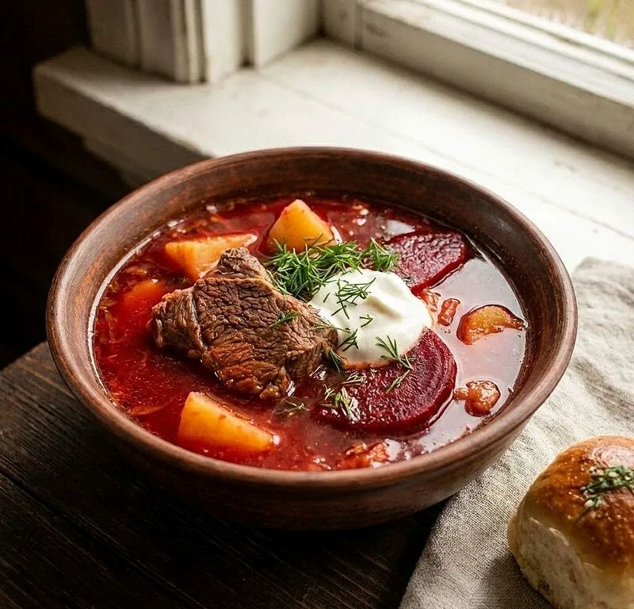
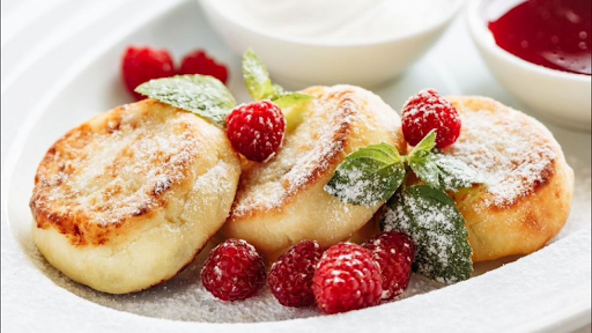
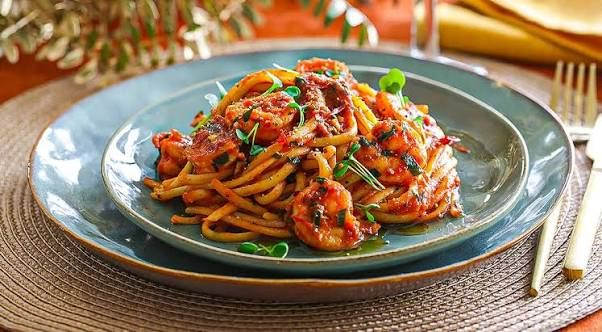
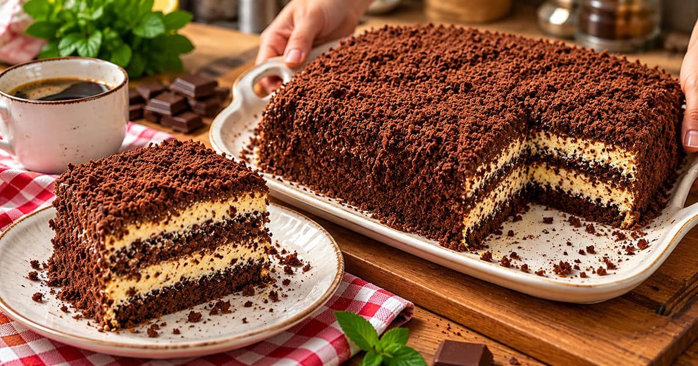

Український борщ з пампушками та салом за старовинним сімейним рецептом
Ідентифікатор: RCP-0142
Після завершення приготування залишилось лише подати страву та прибрати кухню:
| Назва | Категорія | Характеристики | ||
|---|---|---|---|---|
| Час, хв | Складність | Калорійність, ккал | ||
| Класичний борщ | Перші страви | 120 | Середня | 180 |
| Зелений борщ | 60 | Легка | 140 | |
| Сирники зі сметаною | Випічка та десерти | 20 | Легка | 210 |
| Медовий торт | 90 | Складна | 320 | |

Ідентифікатор: RCP-0142

Ідентифікатор: RCP-0143

Ідентифікатор: RCP-0144

Ідентифікатор: RCP-0145